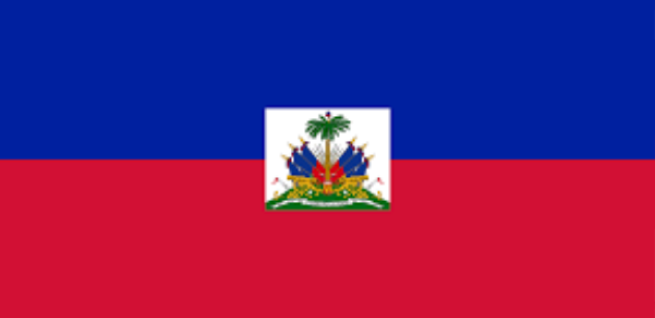
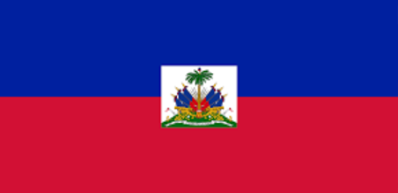

A cultura do Haiti é rica e diversificada, refletindo uma fusão única de influências africanas, indígenas e europeias. Como o primeiro país da América Latina a obter independência, e também o primeiro país a abolir a escravidão, a cultura haitiana tem raízes profundas na luta pela liberdade e na resistência.
A maior parte da população haitiana tem ancestrais africanos devido ao comércio transatlântico de escravos. Essas influências são evidentes na religião, na música, na dança e na culinária do país. As tradições africanas desempenham um papel central na identidade cultural haitiana.
A política do Haiti é marcada por uma história complexa e desafiadora, caracterizada por instabilidade, mudanças frequentes de governo e uma luta contínua por estabilidade democrática e desenvolvimento.O Haiti tem uma história de instabilidade política, com mudanças frequentes de governo, golpes e crises políticas. A instabilidade afeta a governabilidade e a implementação de políticas a longo prazo.
A corrupção é um problema significativo na política haitiana, afetando as instituições governamentais e a confiança pública. Escândalos de corrupção têm implicado tanto políticos quanto funcionários públicos.
O Haiti é o país mais pobre das Américas, enfrentando desafios significativos, como pobreza generalizada, desigualdade social, instabilidade política e desastres naturais frequentes, como terremotos e furacões. A economia é predominantemente agrícola, com a maioria da população dependente da agricultura de subsistência.
A história do país se mistura com a colonização, escravidão, ocupação militar, terremotos, furacões e instabilidade política. Esses fatores fizeram com que desde 1804, época da independência do país, o Haiti avançasse pouco no desenvolvimento do país e na qualidade de vida da população.
O Haiti, situado na parte ocidental da ilha Hispaniola, no Caribe, é um país com uma história rica e uma cultura vibrante, mas também enfrenta desafios significativos. Aqui está uma visão geral deste país cativante:
O Haiti tem uma história única, sendo o primeiro país latino-americano a declarar independência, em 1804, após uma revolta de escravos liderada por Toussaint Louverture e Jean-Jacques Dessalines.A independência do Haiti veio após séculos de colonização francesa e exploração brutal do povo africano escravizado. Esta luta por liberdade e igualdade continua a ser uma parte fundamental da identidade haitiana.
 
